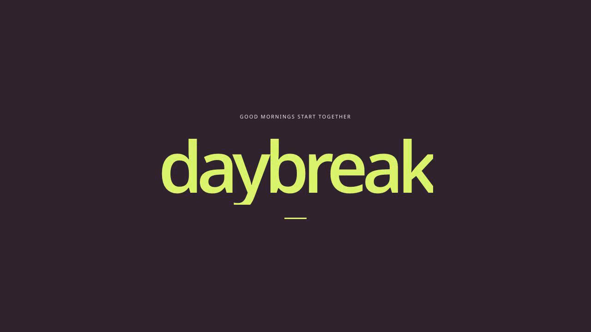
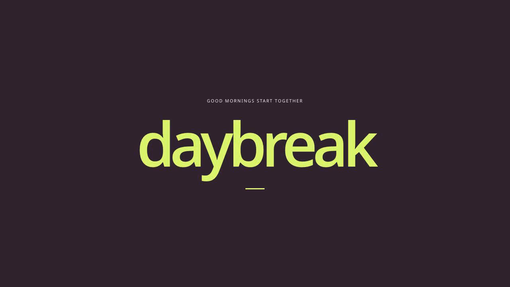
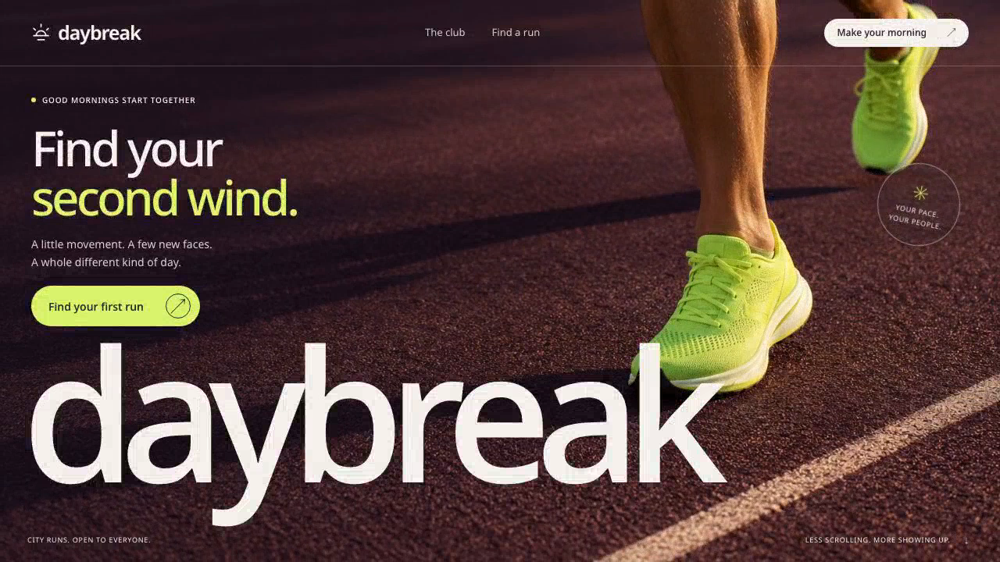
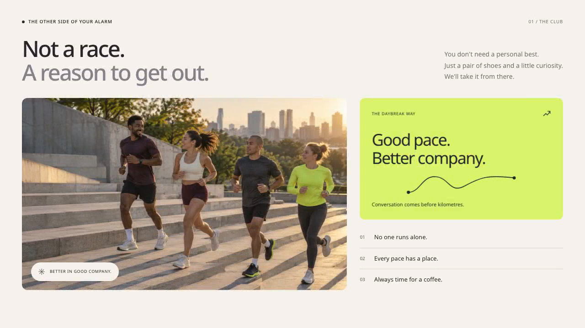
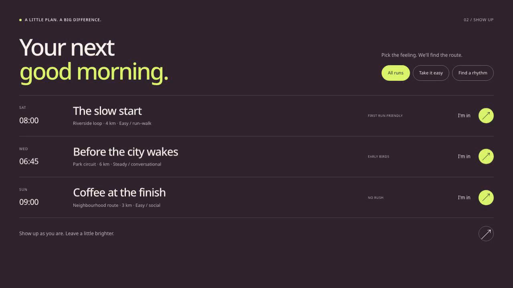

Art direction
Do the imagery, scale, typography and section compositions feel distinctive and intentional enough for your target?
Explore the usable page ↗DESIGN REVIEW / 28 OCTOBER 2026
An original running-club concept and its corrected, twelve-second presentation. Watch once at normal speed, then pause on the moments that need a closer look.
Ready. Chapter buttons pause the film for inspection.
01 / YOUR JUDGMENT
Do the imagery, scale, typography and section compositions feel distinctive and intentional enough for your target?
Explore the usable page ↗At 1× speed, can you follow one focal point and read what matters before the next transition? Name any moment that feels rushed or flat.
Watch the club-to-runs change around 6.65s and the return around 9.75s.
How close is this to the quality you want from the Granger reference? A clean export alone does not answer that question.
View your Granger reference ↗Design direction accepted by the project owner on 28 October 2026: “Ready for this design direction.” This applies to the corrected candidate shown here. For further feedback, reply in the chat with the moment and what you noticed.
02 / SAVED PIXELS
These are decoded frames from the saved exports, not live composition previews. Select an image to inspect its full 1280 × 720 pixels.




